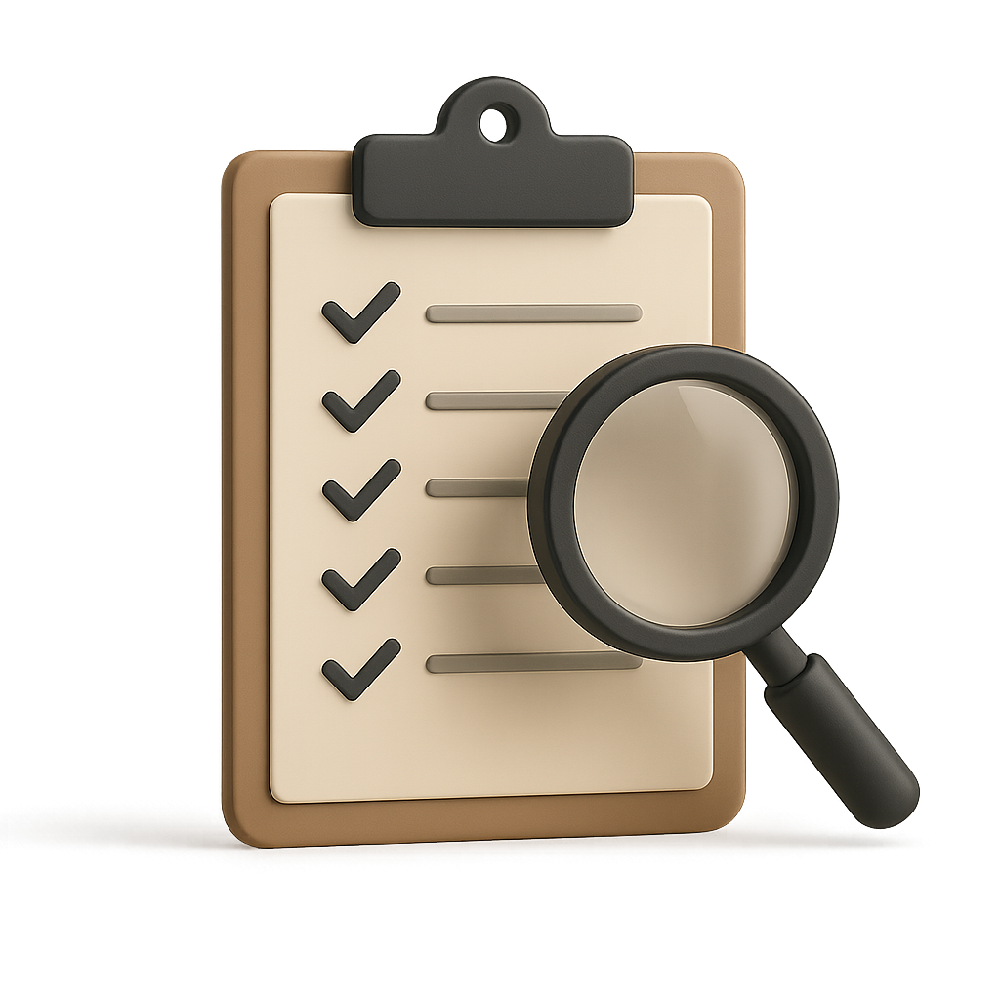
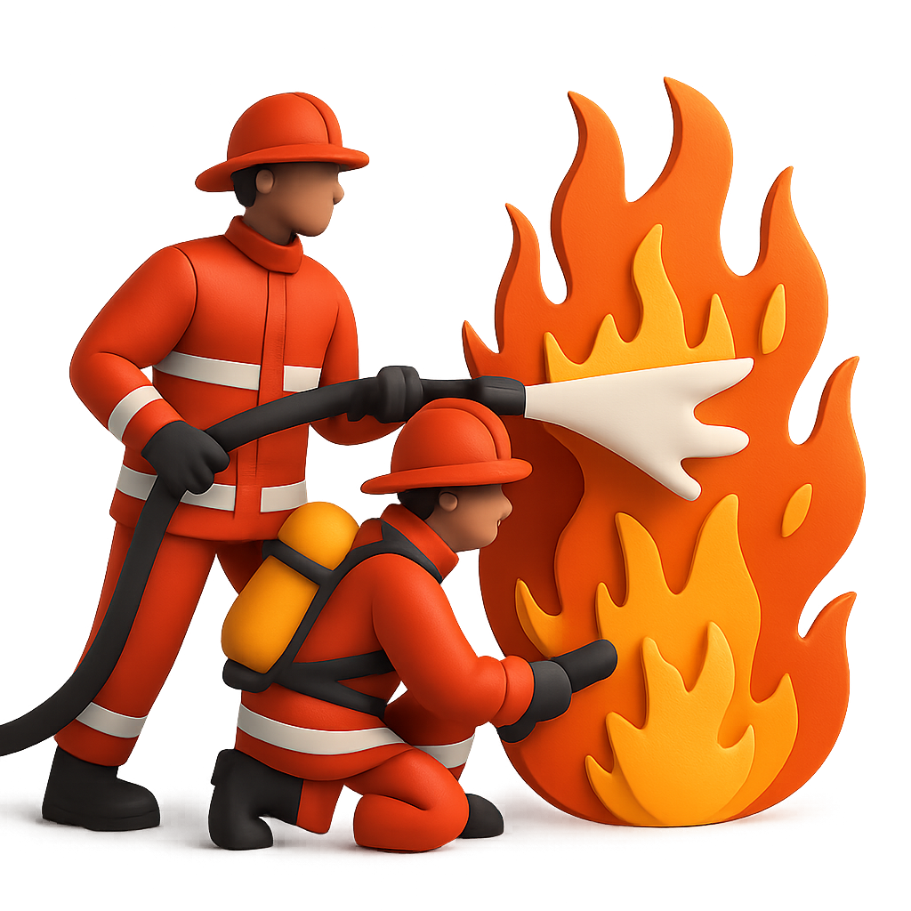
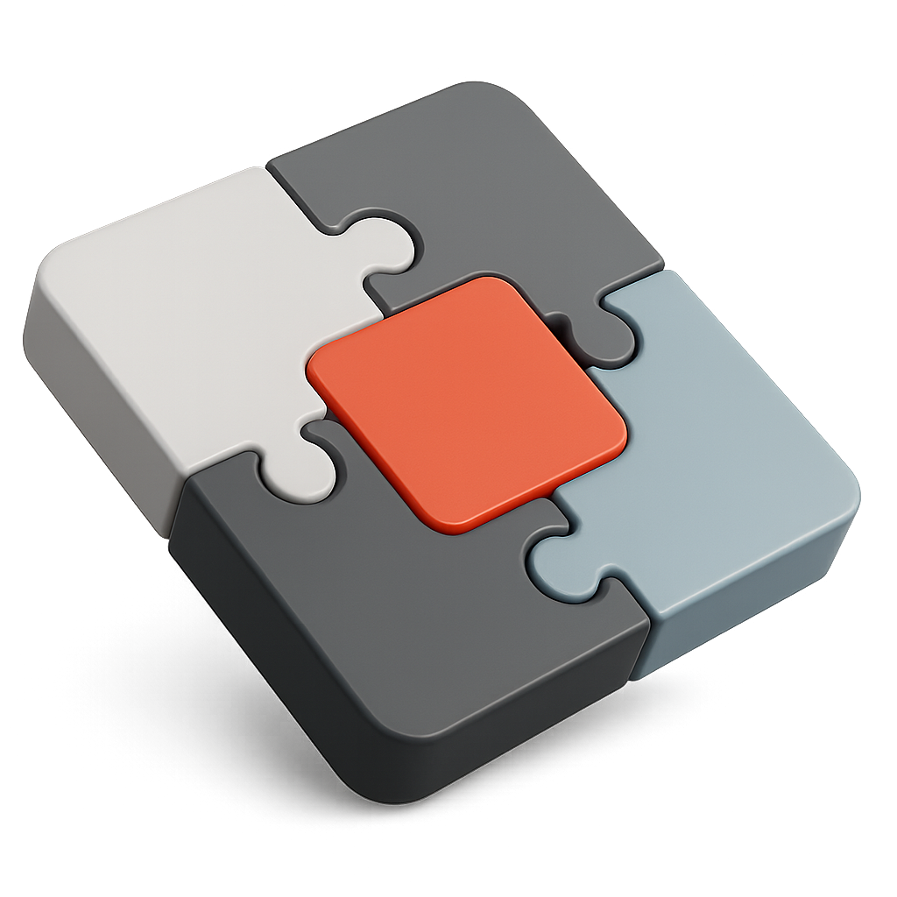

Helping investors manage risk and RESCUE TROUBLED COMPANIES using forensic due diligence and predictive intelligence.
Our Mission
To help investors better manage the risks of investing using forensic due diligence processes and predictive operational intelligence. To rescue investments gone bad and maximize returns, or at least minimize the downside impact of an unrescuable investment.
Founder’s Statement
For over twenty years, we’ve been called in to clean up messes and unravel why promising companies go south post-acquisition. The truth is: many of these disasters are preventable. PE firms often overlook the operational impacts of their acquisitions. Don’t be reactive. Be smart. Call us before you buy. And when things go wrong—really wrong—we’re here to help you fix it.
Many investors acquire good companies, only to find out in a year or so later that everything has gone off the rails since the acquisition. In almost all cases, this is preventable either through better post-acquisition execution planning, or for not acquiring the company to begin with.
For both Individual Investors and Private Equity Companies, our unique due diligence process focuses on how an operation will change after the acquisition. The post-acquisition company performance can be predicted and managed with the right set of tools and metrics before you even invest.
Our pre-acquisition operational due diligence focuses on how production, services, and money flow through the business, and we closely study the operational machinery of the company. By doing this, we can actually predict the viability of the company post-acquisition by developing the metrics and controls needed to visualize operations upon changeover. Upon completion of the analysis, a viability score is assigned from 0-10, which gives decision makers the critical information needed in order to make a good ‘buy vs don’t buy’ decision. A comprehensive report is also provided that highlights the pros and cons of the potential acquisition, including detailed information about where the pitfalls and risks will be in order to manage around them.
If the final decision is to acquire the company, execution during the first few months after an acquisition is critical, so we develop a 120 day launch and execution plan for the business in addition to a first-year budget and beyond, including a realistic forecast of the cash that may be needed for the company to ultimately reach its goals.
Our Services
Pre-acquisition Due Diligence

We help investors predict how business operations will shift post-acquisition, giving you tools, metrics, and a viability score from 0–10 so you know whether to buy or walk away.
C-Level Coaching
We equip overwhelmed founders and executives with leadership systems to scale effectively and sustainably.
Corporate Rescue

When a company is burning cash, we offer fast turnarounds, assign a rescueability score and build tactical recovery plans.
Executive Leadership

If current leadership can’t steer the ship, we step in with proven CEOs, Presidents, COOs or CFOs ready to lead transformation.
Pre-acquisition Due Diligence
Many investors acquire good companies, only to find out in a year or so later that everything has gone off the rails since the acquisition. In almost all cases, this is preventable either through better post-acquisition execution planning, or for not acquiring the company to begin with.
For both Individual Investors and Private Equity Companies, our unique due diligence process focuses on how an operation will change after the acquisition. The post-acquisition company performance can be predicted and managed with the right set of tools and metrics before you even invest.
Our pre-acquisition operational due diligence focuses on how production, services, and money flow through the business, and we closely study the operational machinery of the company. By doing this, we can actually predict the viability of the company post-acquisition by developing the metrics and controls needed to visualize operations upon changeover. Upon completion of the analysis, a viability score is assigned from 0-10, which gives decision makers the critical information needed in order to make a good ‘buy vs don’t buy’ decision. A comprehensive report is also provided that highlights the pros and cons of the potential acquisition, including detailed information about where the pitfalls and risks will be in order to manage around them.
If the final decision is to acquire the company, execution during the first few months after an acquisition is critical, so we develop a 120 day launch and execution plan for the business in addition to a first-year budget and beyond, including a realistic forecast of the cash that may be needed for the company to ultimately reach its goals.
C-Level Coaching
Oftentimes, a brilliant start up entrepreneur finds him or herself in over their head once the company grows to a certain level. The complexities of running a business increase as the company achieves its goals and experiences growth. Early on, the business leader runs and controls every aspect of the operation. As it grows, he or she has to start relying on lieutenants and delegating areas of the operation. Many startup leaders are not willing, or don’t know how to run a company that they don’t 100% control. Soon the leader is overwhelmed and things start breaking. Alternatively, they delegate operations and decisions without the proper systems and oversight tools in place, so it becomes impossible for the teams to stay in sync. We have coached countless executives and helped them develop the tools and skills necessary to run the business successfully, no matter what the stage of the business.
Corporate Rescue
Many investors wait too long to call in rescue services. When a company is burning cash, especially if it wasn’t the plan, or if the cash isn’t priming growth, a disaster is on the horizon. Companies must meet their cash goals and targets above all else in order to be successful, both short term and long term. Pouring money into an underperforming company without a highly accountable and tactical plan is reckless, and never works.
One of the most difficult questions facing investors in this situation is “is it wise to keep pouring money into this loser?” Using unique tools and proven assessment processes, combined with decades of operational experience, we quickly assess the realistic viability of the business and render a rescueability score of 0-10, usually within one to two weeks. As part of that exercise, a detailed rescue plan is developed including a budget, ROI, and exit strategy. Of greatest importance is a realistic assessment of how much more cash will be needed to turn the company around, and how quickly the company can stop burning cash. If the score is too low, then we evaluate various exit strategies, including bankruptcy, selling off assets, dissolution, and a variety of other creative exits meant to minimize downside exposure as much as possible.
Executive Leadership
In order to turn a company around, its leaders must be willing and capable of making radical changes in many areas of the company and lead the troops in executing a new plan. Oftentimes, certain top leaders of the company are either not willing or not capable of making the radical changes necessary to right the ship. When that happens, they must be replaced by someone with the skills, experience, and vision to lead a company back to health. We can provide a battle-proven CEO, President, COO, or CFO to lead your company back to health.
Contact
Connect with us on LinkedIn to explore how we can support your next investment or portfolio company.